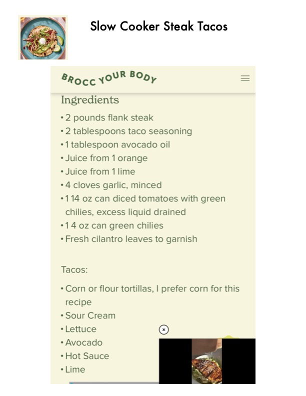

Slow Cooker Steak Tacos

Original cookbook page 641
Ingredients
- 2 pounds flank steak
- * 2 tablespoons taco seasoning
- *1 tablespoon avocado oil
- * Juice from 1 orange
- * Juice from 1 lime
- *4 cloves garlic, minced
- *114 oz can diced tomatoes with greer
- chilies, excess liquid drained
- °14 0z can green chilies
- * Fresh cilantro leaves to garnish
- Tacos:
- * Corn or flour tortillas, I prefer corn for
- recipe
- * Sour Cream
- *Lettuce So)
- * Avocado
- * Hot Sauce
- Lime
Instructions
- °114 oz can diced tomatoes with green chilies, excess liquid drained
Recipe #641 from collection